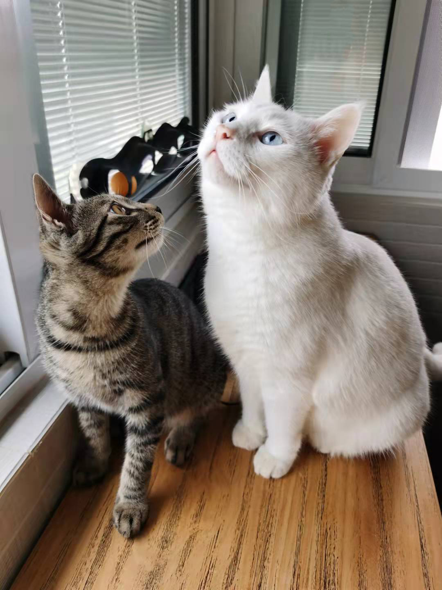
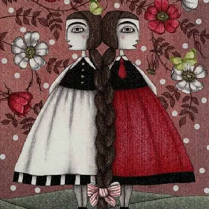

简介
我叫李洋（리양），学号20218029，是大三1班的学生。本人性格热情开朗，待人友好，为人诚实谦虚，学习勤奋，有责任心。
喜欢的电影：《看不见的客人》
喜欢的动物：猫咪
喜欢的食品：咖啡，慕斯蛋糕，巧克力
喜欢的植物：竹
人生格言：人生最终的价值在于觉醒和思考的能力，而不只在于生存。

爱好
因为对绘画感兴趣，喜欢去探究和尝试各种画法的技巧和由来，去发现各种颜料和画笔在不同的纸张上的不同效果，主动购买相关书籍、画册，或者上网学习并与有相同爱好的人交流，尝试创作出自己满意的作品等等。
健康的兴趣和爱好可以使我们更加热爱生活，珍惜时光。使我们的生活变得积极向上，充满正能量，能够让我们感受到生活充实和世间的美好。通过健康的兴趣爱好，驱使我们寻找兴趣知音，相结为友，相互支持，相互学习和帮助彼此，净化了我们的生活环境和精神世界。健康的兴趣和爱好，可以使我们愿意克服各种各样的困难，培养我们顽强的毅力，让我们能够沿着自己的目标坚强地走下去。

星座
双子座，双子座（Gemini）是指出生日期为5月21日~6月21日，是黄道十二宫里的第三宫，位于金牛座之东，巨蟹座之西；代表了善变、沟通。
盎然的春意表现在双子座的人性格上的主要特征是思维善变，无拘无束，对外界包罗万象的事物的永无休止的好奇心，可以说是机敏又不安的星座。 双子座的人反应灵敏，阳光活泼，无论年纪大小，都像孩子般活力四射，拥有一颗不老之心，喜欢新鲜感。